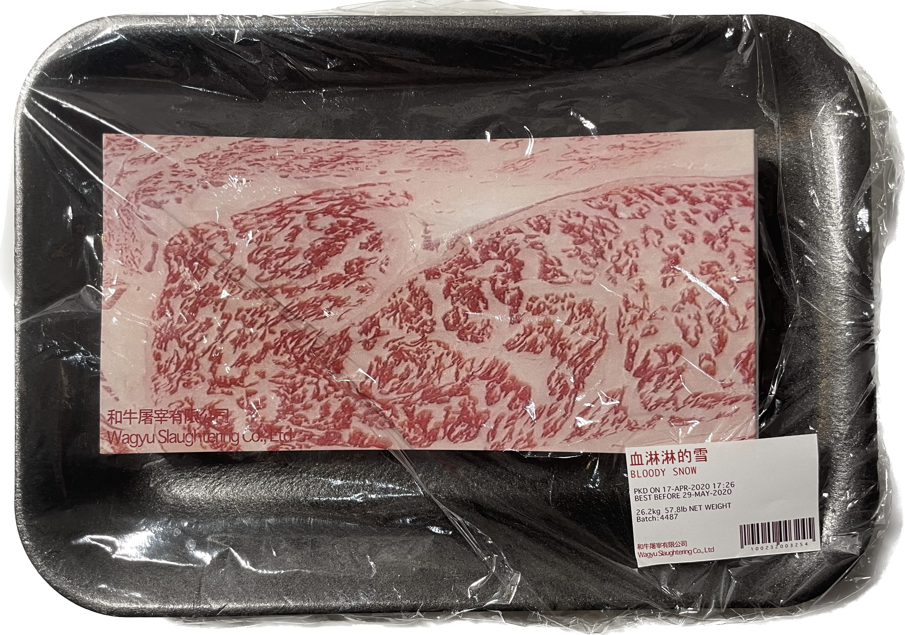
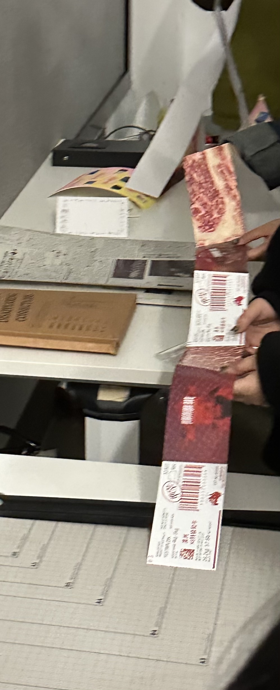

陈龙 Wx/Tel 18121115698
Chen Portfolio (肉食文化 Carnivorous Culture) (可持续性 Sustainability) (生态 Ecology)


旨在深入探肉食文化的扭曲问题。通过将书籍转化为交互媒介，致力于传播肉食文化对环境污染、营养失衡、动物虐待和近亲交配等社会问题的深远影响。借此机会，希望呼吁重新思考人类与自然之间的关系，寻求可持续的解决方案。通过引发思考和对话，我希望唤起公众对肉食文化的关注，并促进人们采取行动，推动建立更加平衡、尊重和可持续的人与自然的关系。这个项目将通过创新的交互方式，融合科学、艺术和社会意识，为社会带来深思和启示，助力构建一个更美好的未来。